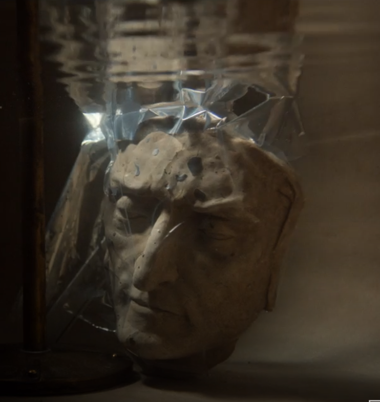

Inferno er en amerikansk thriller fra år 2016. Den er baseret på Dan Brown's novelle af samme navn. Det er en efterfølger af "Da vinci mysteriet" og "Engle og dæmoner".
Tom Hanks spiller som i de to andre film hovedpersonen: Robert Langdon.
Robert Langdon vågner op på et hospital i Florence med et hukommelsestab. Han er såret, og nogen har prøvet på at likvidere ham. Han husker tilsyneladene intet af, hvad der er sket de sidste 36 timer, og kan ikke engang huske, hvorfor han er endt i Italien.
Sammen med den unge kvindelige læge, Sienna flygter de fra hospitallet til hendes lejlighed. Robert Langdon befinder sig i et stort kaos og husker ikke, hvorfor at han har en mystisk genstand i hånden, eller hvorfor en kvinde i sort prøver på at dræbe ham. I den fortabte hukommelse findes der dog stadig små ærinderinger. Sammen kommer Sienna og langdon frem til, at genstanden er Sandro Botticellis overbliksmaleri af Helvede, og at der er påført bogstaver, som leder dem til, at det derfor må være et anagram. De flytger begge fra lejligheden, da agtenter og WHO er efter dem.
I først omgang ledes Langdon og Sienna til Palazzo Vecchio med WHO og agenter lige i hælene af dem.
Sienna og Langdon er på flugt fra Palazzo og tager videre til "Santa del Fiore" for at finde Dantes dødsmaske, som Langdon har glemt at han har stjålet. Her finder de ud af at næste spor er i Venedig
Langdon og Sienna bliver opsøgt af Bouchard, som hævder at han er fra WHO og vil hjælpe dem. Han får dem fra Florence til Venedig, men inden togturen er omme får Langdon tilbageblik, og kan huske at det var Elizabeth fra WHO, som kontaktede ham. Sienna og Langdon flygter derfor videre på egen hånd indtil markuskirken samtidig med at de har Bouchard lige i hælene.
Sienna viser sig dog at have haft et forhold med Zobrist og forlader Langdon, da de er på flugt op fra kælderen i markuskirken. Langdon bliver fanget af Bochard og Sienna er på fri fod på vej til Istanbil for at udslippe virussen.
Sienna er på et universitet i Istanbul, hvor hun mødes med sin kilde, der skal hjælpe hende med at finde virussen.
Det næste spor foregår ved Hagia Sophia, hvor de leder efter Dandolos grav, dog går de forgæves og må videre til det sunkne palads.
Langdon og WHO må videre til det sunkne palads, hvor Sienna har tænkt sig at udslippe virsussen.